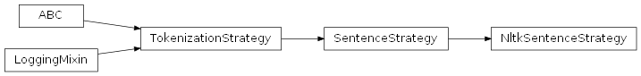
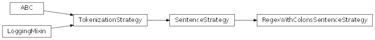
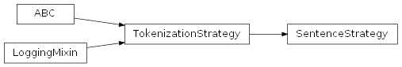
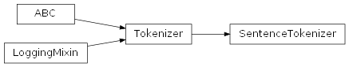
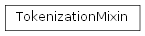
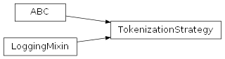
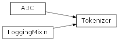
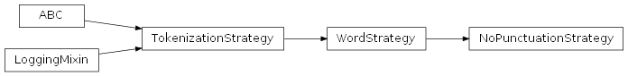
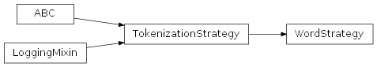
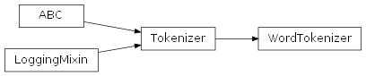

SentimentAnalysis.src.nlp.tokenization package
Submodules
SentimentAnalysis.src.nlp.tokenization.sentence_strategy module
sentence_strategy.py
Version 1.0, validated on 2024-09-14
This module contains classes for sentence tokenization, namely the SentenceStrategy base class and concrete sentence strategy subclasses.
Classes
- SentenceStrategy(TokenizationStrategy, LoggingMixin)
Base class for sentence tokenization.
- NltkSentenceStrategy(SentenceStrategy)
Sentence tokenization strategy using the standard NLTK sentence tokenizer.
- RegexWithColonsSentenceStrategy(SentenceStrategy)
Sentence tokenization strategy using a regex that considers colons to be end-of-sentence characters to identify sentences within the input string.
- class SentimentAnalysis.src.nlp.tokenization.sentence_strategy.NltkSentenceStrategy[source]
Bases:
SentenceStrategyThis sentence tokenization strategy uses the standard NLTK sentence tokenizer.

- class SentimentAnalysis.src.nlp.tokenization.sentence_strategy.RegexWithColonsSentenceStrategy[source]
Bases:
SentenceStrategyThis sentence tokenization strategy uses a custom regular expression to split the text into sentences.
It considers colons to be end-of-sentence characters.
- tokenize(input_string: str) List[str][source]
Splits a string into sentences using a custom regular expression.
Keeps the punctuation marks.
This strategy considers colons to be end-of-sentence characters.
- Parameters:
input_string (str) – The text to split into sentences.
- Returns:
The resulting list of sentences.
- Return type:
List[str]
Notes
The split into sentences is done by matching the text with a regular expression and not by a split at end-of-sentence characters or character sequences, as this way the punctuation information (Question, exclamation, etc.) is preserved.
- class SentimentAnalysis.src.nlp.tokenization.sentence_strategy.SentenceStrategy[source]
Bases:
TokenizationStrategySentenceStrategy class.
The SentenceStrategy interface declares operations common to all supported sentence tokenization strategies.
The Context uses this interface to call the algorithm defined by concrete strategies.
- clean_and_log_result(self, sentences: List[str]) List[str]:[source]
Removes leading and trailing whitespace from the sentences.
- log_tokenization_result(self, sentences: List[str]) None:[source]
Logs the tokenization result if the verbose property is set to True.
- tokenize_by_regex(self, input_string: str, regex: re.Pattern) List[str]:[source]
Tokenizes the input string into sentences using the given regex.
- Abstract Methods
- ----------------
- clean_and_log_result(sentences: List[str]) List[str][source]
Removes leading and trailing whitespace from the sentences.
Removes leading and trailing whitespace from the sentences and calls the log_tokenization_result method to log the sentences.
- Parameters:
sentences (List[str]) – The list of sentences.
- Returns:
The list of sentences stripped of leading and trailing whitespace whitespace.
- Return type:
List[str]
- log_tokenization_result(sentences: List[str]) None[source]
Logs the tokenization result if the verbose property is set to True.
- Parameters:
sentences (List[str]) – The sentences the inputs string has been tokenized into.
- abstract tokenize(input_string: str) List[str][source]
Tokenizes the input string.
Abstract method that needs to be implemented by the concrete sentence strategy class.
- Parameters:
input_string (str) – The string to tokenize into sentences.
- Returns:
The sentences extracted by the tokenizer from the input_string.
- Return type:
List[str]
- Raises:
NotImplementedError – If the concrete sentence strategy class has not implemented this abstract method.
- tokenize_by_regex(input_string: str, regex: Pattern) List[str][source]
Tokenizes the input string into sentences using the given regex.
Tokenizes the input string into sentences using the given regular expression. Cleans the sentences from unwished whitespace before returning them.
- Parameters:
input_string (str) – The string to tokenize into sentences.
regex (re.Pattern) – The regular expression to use to identify a sentence.
- Returns:
The resulting list of cleaned sentences.
- Return type:
List[str]
SentimentAnalysis.src.nlp.tokenization.sentence_tokenization_factory module
sentence_tokenization_factory.py
Version 1.0, validated on 2024-12-04
This module provides a function to create a sentence tokenizer that uses a given tokenization strategy.
Functions
- get_sentence_tokenizer(strategy_name: str) -> SentenceTokenizer:
Returns a SentenceTokenizer using the specified tokenization strategy.
- SentimentAnalysis.src.nlp.tokenization.sentence_tokenization_factory._get_sentence_tokenization_strategy(strategy_name: str) SentenceStrategy[source]
Returns an instance of the specified sentence tokenization strategy.
Dynamically creates and returns an instance of the sentence tokenization strategy that corresponds to the specified strategy name.
- Parameters:
strategy_name (str) – A string designing the strategy. This is supposed to be the first part of the name of the sentence strategy to use, e.g. ‘Nltk’ for NltkSentenceStrategy.
- Return type:
An instance of the specified strategy class.
- Raises:
CriticalException – If the specified strategy was not found.
Notes
It is important that the strategy name given is written exactly the same as the name of the strategy class, since upper and lower case letters cannot be predicted programmatically.
- SentimentAnalysis.src.nlp.tokenization.sentence_tokenization_factory.get_sentence_tokenizer(strategy_name: str) SentenceTokenizer[source]
Returns a SentenceTokenizer using the specified tokenization strategy.
Dynamically creates and returns an instance of the SentenceTokenizer class using the specified sentence tokenization strategy.
- Parameters:
strategy_name (str) – A string designing the strategy. This is supposed to be the first part of the name of the sentence strategy to use, e.g. ‘Nltk’ for NltkSentenceStrategy.
- Returns:
An instance of the SentenceTokenizer class that uses the specified sentence tokenization strategy.
- Return type:
SentimentAnalysis.src.nlp.tokenization.sentence_tokenization_regex module
sentence_tokenization_regex.py
Version 1.0, updated on 2024-09-17
This module provides regular expressions that can be used for different sentence tokenization strategies.
Functions
- regex_with_colons() -> Pattern[str]:
Regex for identifying sentences by end-of-sentence characters or colons.
- SentimentAnalysis.src.nlp.tokenization.sentence_tokenization_regex.regex_with_colons() Pattern[str][source]
Regex for identifying sentences by end-of-sentence characters or colons.
This regex considers colons as end-of-sentence characters.
- Returns:
Compiled regex pattern for sentence tokenization.
- Return type:
Pattern[str]
Notes
Explanation of the regex per line:
[1] Set x flag to allow comments at the end of the lines. [2] At least one character that is not an end-of-sentence character. [3] Optionally followed by one or more dots without whitespace. [4] [2]-[3] must be found at least once. [5] Followed by any number of any end-of-sentence characters, followed
optionally by any number of white spaces, or the end of the string.
SentimentAnalysis.src.nlp.tokenization.sentence_tokenizer module
sentence_tokenizer.py
Version 1.0, updated on 2025-05-01
- class SentimentAnalysis.src.nlp.tokenization.sentence_tokenizer.SentenceTokenizer(my_strategy: SentenceStrategy | None = None)[source]
Bases:
TokenizerSentenceTokenizer class.
This class implements the Tokenizer base class for sentence tokenization. It serves as the context in a strategy pattern, which allows you to dynamically choose a sentence tokenization strategy at runtime.
The class works with any of the sentence tokenization strategies that implement the SentenceStrategy interface. It gives access to the tokenize method of the given sentence tokenization strategy.
- my_strategy
The sentence tokenization strategy to be used.
- Type:
- Static Methods
- --------------
- default_strategy SentenceStrategy[source]
Returns the default sentence tokenization strategy.
- __init__(my_strategy: SentenceStrategy | None = None) None[source]
Constructor.
Sets the sentence tokenization strategy which is supposed to be used for sentence tokenization. If no strategy is specified when the SentenceTokenizer is called, a default sentence tokenization strategy is used.
- Parameters:
my_strategy (SentenceStrategy | None) – The sentence tokenization strategy to be used. Default value: None.
- static default_strategy() SentenceStrategy[source]
Returns the default sentence tokenization strategy.
As default, NltkSentenceStrategy is used. It is the standard sentence tokenization method of the nltk library and works reasonably well.
- Returns:
The sentence tokenization strategy.
- Return type:
Notes
This static method is used instead of a class constant to ensure lazy instantiation. This approach avoids the overhead of creating a default strategy object until it is actually needed.
SentimentAnalysis.src.nlp.tokenization.tokenization_mixin module
tokenization_mixin.py
Version 1.0, validated on 2024-09-17
- class SentimentAnalysis.src.nlp.tokenization.tokenization_mixin.TokenizationMixin[source]
Bases:
objectTokenizationMixin class.
This mixin provides tokenization capabilities for text data.
It provides getters and setters for different types of tokenizers (word tokenizer, sentence tokenizer, …), which can be set to use different tokenization strategies (nltk, custom strategies, …).
It also provides default strategies for the different types of tokenizers. The default strategy is ‘NoPunctuation’ for word tokenization and ‘nltk’ for sentence tokenization.
- DEFAULT_SENTENCE_STRATEGY
The name of the default sentence strategy.
- Type:
str
- DEFAULT_WORD_STRATEGY
The name of the default word strategy.
- Type:
str
- sentence_tokenizer
The sentence tokenizer.
- Type:
- word_tokenizer
The word tokenizer.
- Type:
- set_sentence_tokenizer(tokenization_strategy_name: str = '') None:[source]
Sets the sentence tokenizer using the specified strategy.
- set_word_tokenizer(tokenization_strategy_name: str = '') None:[source]
Sets the word tokenizer using the specified strategy.
- DEFAULT_SENTENCE_STRATEGY: str = 'Nltk'
- DEFAULT_WORD_STRATEGY: str = 'NoPunctuation'
- property sentence_tokenizer: SentenceTokenizer
Gets the sentence tokenizer.
If no sentence tokenizer has been set, a default sentence strategy is used to set it.
- Returns:
The sentence tokenizer.
- Return type:
- set_sentence_tokenizer(tokenization_strategy_name: str = '') None[source]
Sets the sentence tokenizer using the specified strategy.
- Parameters:
tokenization_strategy_name (str) – The name of the tokenization strategy to use.
- set_word_tokenizer(tokenization_strategy_name: str = '') None[source]
Sets the word tokenizer using the specified strategy.
- Parameters:
tokenization_strategy_name (str) – The name of the tokenization strategy to use.
- property word_tokenizer: WordTokenizer
Gets the word tokenizer.
If no word tokenizer has been set, the default word tokenization strategy is used to set it.
- Returns:
The word tokenizer.
- Return type:
SentimentAnalysis.src.nlp.tokenization.tokenization_strategy module
tokenization_strategy.py
Version 1.0, updated on 2025-05-01
- class SentimentAnalysis.src.nlp.tokenization.tokenization_strategy.TokenizationStrategy[source]
Bases:
ABC,LoggingMixinTokenizationStrategy class.
The TokenizationStrategy interface declares operations common to all supported tokenization strategies.
The Context uses this interface to call the algorithm defined by concrete Strategies.
- logger
A Logger instance for logging messages related to the operations performed by the class and its subclasses.
- Type:
Logger
- verbose
Whether the tokenized elements should be printed to the console.
- Type:
bool
- Abstract Methods
- ----------------
- tokenize(self, input_string
Tokenizes the input string.
- Type:
str) -> List[str]:
- abstract tokenize(input_string: str) List[str][source]
Tokenizes the input string.
- Parameters:
input_string (str) – The string to tokenize.
- Returns:
List of strings (sentences, words, characters) the input string was tokenized into.
- Return type:
List[str]
- property verbose: bool
Indicates whether the tokenized elements should be printed.
Indicates whether the tokenized elements should be printed to the console.
SentimentAnalysis.src.nlp.tokenization.tokenizer module
tokenizer.py
Version 1.0, updated on 2024-12-04
- class SentimentAnalysis.src.nlp.tokenization.tokenizer.Tokenizer(my_strategy: TokenizationStrategy | None = None)[source]
Bases:
ABC,LoggingMixinTokenizer class.
This class defines the interface for applying different tokenization strategies to input strings. It acts as a context for the TokenizationStrategy and enforces that any subclass must implement the ‘tokenize’ method.
- strategy
The tokenization strategy to use for tokenizing input strings.
- Type:
- Abstract Methods
- ----------------
- tokenize(self, input_string
Tokenizes the input string.
- Type:
str) -> List[str]:
- __init__(my_strategy: TokenizationStrategy | None = None) None[source]
Constructor.
Initializes the Tokenizer with a specific tokenization strategy. If no strategy is provided, an error is logged, and a ValueError is raised.
- Parameters:
my_strategy (TokenizationStrategy | None) – The tokenization strategy to use. If not provided, a ValueError is raised.
- Raises:
CriticalException – If no tokenization strategy is provided.
- property strategy: TokenizationStrategy
Returns the current tokenization strategy used by the tokenizer.
The strategy follows the Strategy design pattern, allowing the Tokenizer to work with different tokenization strategies through a common interface.
- Returns:
The current tokenization strategy.
- Return type:
- abstract tokenize(input_string: str) List[str][source]
Tokenizes the input string.
Abstract method that must be implement by subclasses. Takes a string and returns a list of tokens based on the specific tokenization strategy.
- Parameters:
input_string (str) – The input string to tokenize.
- Returns:
List[str]
- Return type:
A list of tokens generated from the input string.
SentimentAnalysis.src.nlp.tokenization.word_strategy module
word_strategy.py
Version 1.0, updated on 2024-09-18
This module contains classes for word tokenization, namely the WordStrategy base class and concrete word strategy subclasses.
Classes
- WordStrategy(TokenizationStrategy, LoggingMixin)
Base class for word tokenization.
- NoPunctuationStrategy(WordStrategy)
Word tokenization strategy that eliminates the punctuation.
- class SentimentAnalysis.src.nlp.tokenization.word_strategy.NoPunctuationStrategy[source]
Bases:
WordStrategyThis word tokenization strategy eliminates punctuation marks.
- tokenize(input_string: str) List[str][source]
Splits string into words.
Splits string into words only, throws away the punctuation. Preserves
abbreviations
hyphened words
floats
currency and percent, together with number
ellipses.
Split examples:
‘the idea is good. but that u.s.a. poster-print costs $12.40…’ => [‘the’, ‘idea’, ‘is’, ‘good’, ‘but’, ‘that’, ‘u.s.a.’,
‘poster-print’, ‘costs’, ‘$12.40’, ‘…’]),
‘This is a - very short but nice - little text. It contains but 2 ‘ ‘sentences.’ => [‘this’, ‘is’, ‘a’, ‘very’, ‘short’, ‘but’, ‘nice’, ‘little’,
‘text’, ‘it’, ‘contains’, ‘but’, ‘2’, ‘sentences’]
- class SentimentAnalysis.src.nlp.tokenization.word_strategy.WordStrategy[source]
Bases:
TokenizationStrategyWordStrategy class.
The WordStrategy interface declares operations common to all supported word tokenization strategies.
The Context uses this interface to call the algorithm defined by Concrete Strategies.
- log_tokenization_result(self, words: List[str]) None:[source]
Logs the tokenization result if the verbose property is set to True.
- Abstract Methods
- ----------------
- log_tokenization_result(words: List[str]) None[source]
Logs the tokenization result if the verbose property is set to True.
- Parameters:
words (List[str]) – The words the inputs string has been tokenized into.
- abstract tokenize(input_string: str) List[str][source]
Tokenizes the input string.
Abstract method that needs to be implemented by the concrete sentence strategy class.
- Parameters:
input_string (str) – The string to tokenize into words.
- Returns:
The words extracted by the tokenizer from the input_string.
- Return type:
List[str]
- Raises:
NotImplementedError – If the concrete sentence strategy class has not implemented this abstract method.
SentimentAnalysis.src.nlp.tokenization.word_tokenization_factory module
word_tokenization_factory.py
Version 1.0, validated on 2024-12-04
This module provides a function to create a word tokenizer that uses a given tokenization strategy.
Functions
- get_word_tokenizer(strategy_name: str) -> WordTokenizer:
Returns a WordTokenizer using the specified tokenization strategy.
- SentimentAnalysis.src.nlp.tokenization.word_tokenization_factory._get_word_tokenization_strategy(strategy_name: str) WordStrategy[source]
Returns an instance of the specified word tokenization strategy.
Dynamically creates and returns an instance of the word strategy that corresponds to the specified strategy name.
- Parameters:
strategy_name (str) – A string designing the strategy. This is supposed to be the first part of the name of the word strategy to use, e.g. ‘NoPunctuation’ for NoPunctuationStrategy.
- Return type:
An instance of the specified strategy class.
- Raises:
CriticalException – If the specified strategy was not found.
Notes
It is important that the strategy name given is written exactly the same as the name of the strategy class, since upper and lower case letters cannot be predicted programmatically.
- SentimentAnalysis.src.nlp.tokenization.word_tokenization_factory.get_word_tokenizer(strategy_name: str) WordTokenizer[source]
Dynamically creates and returns an instance of the WordTokenizer class using the specified word tokenization strategy.
- Parameters:
strategy_name (str) – A string designing the strategy. This is supposed to be the first part of the name of the word strategy to use, e.g. ‘NoPunctuation’ for NoPunctuationStrategy.
- Returns:
An instance of the WordTokenizer class that uses the specified word tokenization strategy.
- Return type:
SentimentAnalysis.src.nlp.tokenization.word_tokenization_regex module
word_tokenization_regex.py
Version 1.0, validated on 2024-09-18
This module provides regular expressions that can be used for different word tokenization strategies.
Functions
- regex_penn_treebank_wo_punctuation -> Pattern[str]
Regex for Penn Treebank identification of words without punctuation marks.
- SentimentAnalysis.src.nlp.tokenization.word_tokenization_regex.regex_penn_treebank_wo_punctuation()[source]
Regex for Penn Treebank word tokenization but without including punctuation and similar characters.
The Penn Treebank word tokenization rules were established by: Mitchell P. Marcus, Beatrice Santorini, and Mary Ann Marcinkiewicz, “Building a Large Annotated Corpus of English: The Penn Treebank,” International Conference on Computational Logic, 1993. [Online]. Available: <https://www.semanticscholar.org/paper/Building-a-Large-Annotated-Corpus -of-English%3A-The-Marcus-Santorini /0b44fcbeea9415d400c5f5789d6b892b6f98daff>
Aiming at the tagging of the parts of speech in the Penn Treebank corpus, the authors treat punctuation, brackets, quotation marks, currency symbols etc., and compounds like “won’t” or “children’s”.
This regular expression is originally based on the Penn Treebank tokenization principles and taken from page 19 of: D. Jurafsky and J. H. Martin, Speech and Language Processing: An Introduction to Natural Language Processing, Computational Linguistics, and Speech Recognition, 2023. Accessed: Nov. 17 2023. [Online]. Available: https://web.stanford.edu/~jurafsky/slp3/
It has been slightly modified for the current needs, especially by removing the line including punctuation, brackets and similar characters.
- Returns:
regex – Compiled regex pattern for Penn Treebank tokenization without punctuation marks.
- Return type:
Pattern[str]
Notes
Explanation of the regex per line:
[1] Set x flag to allow comments at the end of the lines. [2] Abbreviations, e.g. “U.S.A.”. [3] Words with optional internal hyphens, e.g. “or-so”. [4] Currency and percentages, e.g. “$12.40”, “82%”, “82 %”. [5] Ellipsis (”…”).
SentimentAnalysis.src.nlp.tokenization.word_tokenizer module
word_tokenizer.py
Version 1.0, updated on 2025-05-01
- class SentimentAnalysis.src.nlp.tokenization.word_tokenizer.WordTokenizer(my_strategy: WordStrategy | None = None)[source]
Bases:
TokenizerWordTokenizer class.
This class implements the Tokenizer base class for word tokenization. It serves as the context in a strategy pattern, which allows you to dynamically choose a word tokenization strategy at runtime.
The class works with any of the word tokenization strategies that implement the WordStrategy interface. It gives access to the tokenize method of the given word tokenization strategy.
- strategy
The word tokenization strategy to be used.
- Type:
- Static Methods
- --------------
- default_strategy SentenceStrategy[source]
Returns the default sentence tokenization strategy.
- __init__(my_strategy: WordStrategy | None = None) None[source]
Constructor.
Sets the word tokenization strategy which is supposed to be used for word tokenization. If no strategy is specified when the WordTokenizer is called, a default word tokenization strategy is used.
- Parameters:
my_strategy (WordStrategy | None) – The word tokenization strategy to be used. Default value: None.
- static default_strategy() WordStrategy[source]
Returns the default word tokenization strategy.
As default, NoPunctuationStrategy is used. Its result corresponds to the intuitive way of splitting text into words, throwing away any punctuation marks but keeping hyphened words as one word and currency symbols together with their numbers.
- Returns:
The word tokenization strategy.
- Return type:
Notes
This method is used instead of a class constant to ensure lazy instantiation. This approach avoids the overhead of creating a default strategy object until it is actually needed.